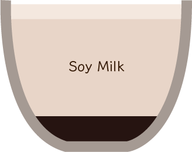
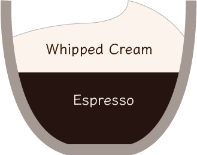

お家でのカフェラテの
楽しみ方
お家でのカフェラテの
楽しみ方
カフェラテを楽しむための5つの豆知識

01
カフェラテとカフェオレ
の違い
02
エスプレッソとコーヒー
の違い
03
お家でのカフェラテ
のつくり方
04
おうちでアテアート
を楽しもう
05
他のエスプレッソドリンク
も楽しもう
カフェラテ
Cafe Latte

カフェラテは、コーヒーの旨味がぎゅっと凝縮されたエスプレッソに、蒸気で温めたスチームミルクを注いだドリンクです。
カフェラテ
Cafe Latte

カフェラテは、コーヒーの旨味がぎゅっと凝縮されたエスプレッソに、蒸気で温めたスチームミルクを注いだドリンクです。
エスプレッソもコーヒーも、もとはどちらも珈琲豆です。
一番大きな違いは、その抽出方法。
一般的なコーヒーは、ドリップ式と言う、珈琲豆を挽いた粉に
お湯を注ぐ方法でコーヒーを抽出します。
一方でエスプレッソは、エスプレッソマシンを用いて粉に圧力をかけ
短時間でコーヒーの成分を抽出します。
そのため、豆に対して抽出される量がとても少なく、
濃厚な味わいを楽しむことができます。
家庭用のエスプレッソマシンで
実際にカフェラテをつくってみましょう！
STEP1
エスプレッソを抽出する
コーヒーの粉を計量をしてマシンにセット。ボタンを押すだけでエスプレッソが抽出されます。
STEP2
ミルクをスチームする
コーヒーの粉を計量をしてマシンにセット。ボタンを押すだけでエスプレッソが抽出されます。
STEP3
ミルクをエスプレッソに流し込む
コーヒーの粉を計量をしてマシンにセット。ボタンを押すだけでエスプレッソが抽出されます。
お家でカフェラテを頼んだとき
綺麗なラテアートが出てくると、気分が上がりますよね。
実はそのラテアートも、練習をすればおうちでできるんです。
Heart
まずは真っ白なハートを描いてみましょう。真っ白なハートが描けたら、ミルクを注ぐ際にピッチャーを小刻みに左右に揺らして綺麗なレイヤーのかかったハートも描いてみましょう。
Leaf
レイヤーハートが描けるようになったら今度はリーフに挑戦してみましょう。リーフは、綺麗なレイヤーを描くことがカギとなるので、初めはハートで練習を重ねるのがオススメです。
Tulip
チューリップはハートやリーフよりも少しコツが必要ですが、ハートをいくつも描くイメージで描いていくのがオススメです。是非チャレンジをしてみてください。
カフェラテ
Cafe Latte
カフェラテはエスプレッソにミルクを注いだシンプルなドリンクです。
その分アレンジの仕方も豊富なので、是非お試しください。
カプチーノ
Cappuccino
フォームミルク（ミルクの泡）の層がカフェラテよりも大きいドリンクです。その分カップに占める液体の量が少ないため、エスプレッソの味わいをより楽しむことができます。
カフェモカ
Cafe Mocha
エスプレッソにチョコレートまたはチョコレートソースを溶かしたドリンクです。チョコレートの甘さが欲しくなった時は、是非お試しください。
ソイラテ
Soy Latte
カフェラテのミルクを、ソイミルクに変更しただけのドリンクです。カフェラテよりもマイルドな味わいで、カロリーも抑えることができます。
塩キャラメルラテ
Salt Caramel Latte
エスプレッソにキャラメルソースと塩を溶かした甘じょっぱい味わいのドリンクです。キャラメルのほろ苦さと甘さ、塩のしょっぱさが絶妙にマッチします。
マキアート
Macchiato
エスプレッソに、同量のミルクを注いだドリンクです。ミルクの量が少ないのでエスプレッソの味わいがとても濃く感じられます。
エスプレッソコンパンナ
Espresso Con Panna
エスプレッソの上にホイップクリームを乗せた、デザート感覚で楽しむことのできるドリンクです。味の濃いエスプレッソに、クリームの優しさが溶け込みます。